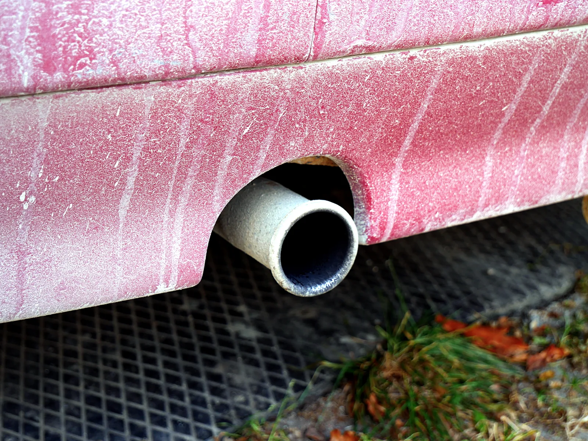
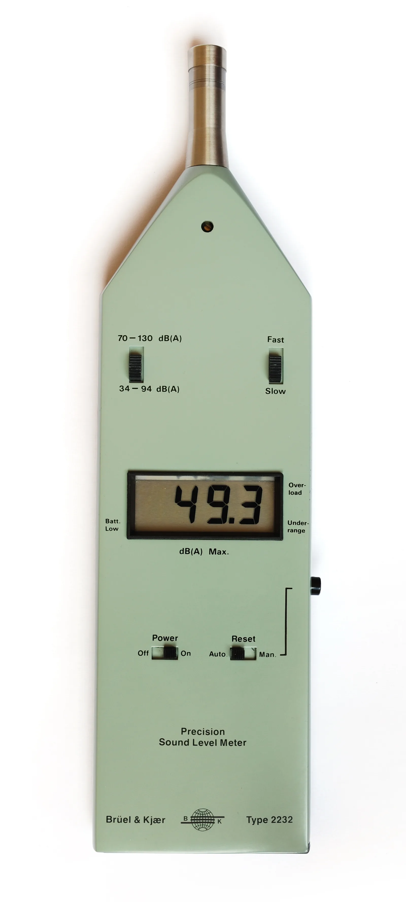
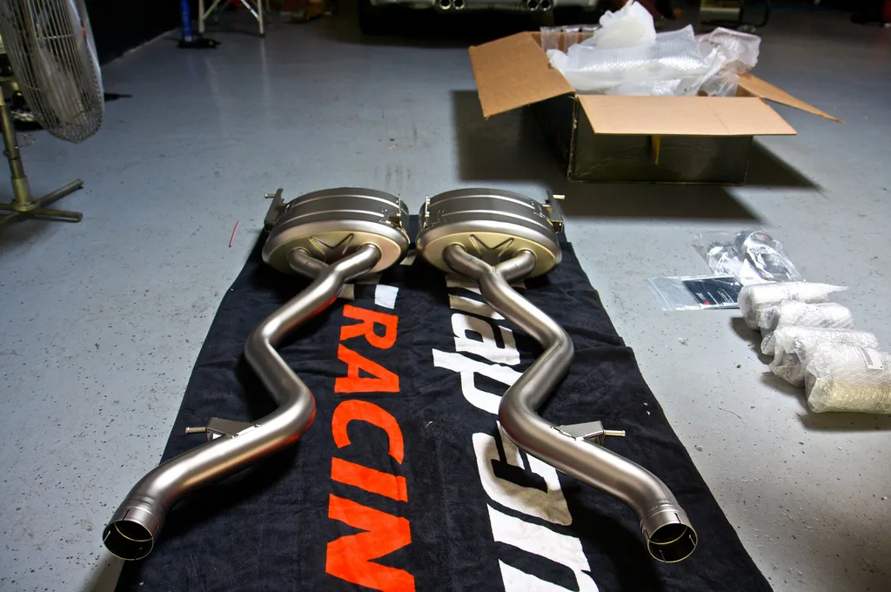
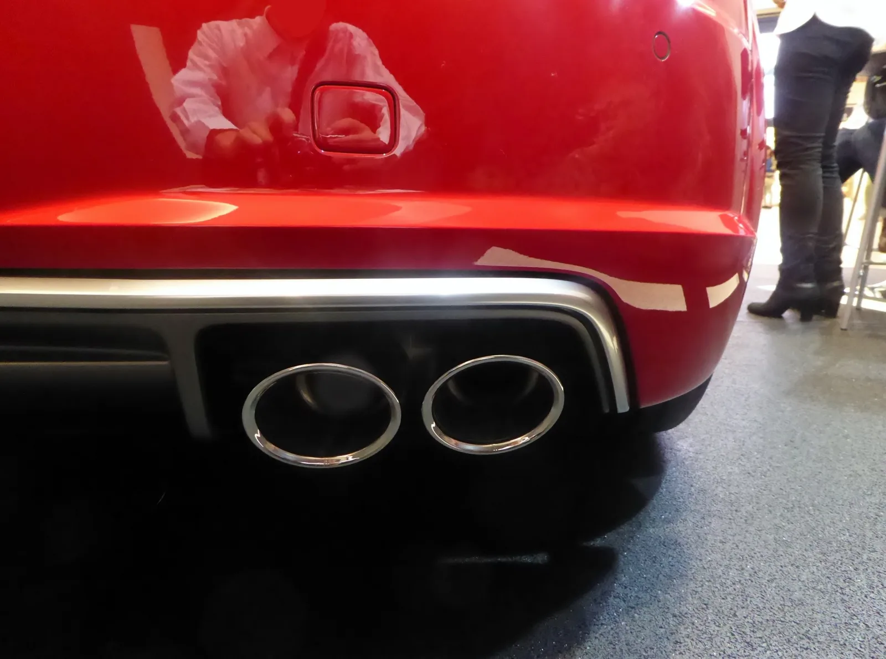

▲ 겉으로는 평범해 보여도 배기관 내부 구조에 따라 소음 수준은 크게 달라진다 ⓒ Wikimedia Commons
새벽 골목을 뒤흔드는 "펑펑" 소리, 신호 대기 중 옆 차선에서 굉음을 내뿜는 스포츠카. 다들 한 번쯤 겪어본 상황이다. 그런데 이 소리, 어디까지가 '개성'이고 어디부터가 '범죄'일까.
결론부터 말하면 기준은 이미 숫자로 정해져 있다. 승용차라면 배기소음 100dB(A)를 넘기는 순간, 그리고 그 원인이 소음기 제거나 무단 개조라면 과태료를 넘어 형사처벌까지 이어질 수 있다.
1. 배기소음, 정확히 몇 dB까지 합법인가
자동차 소음은 소음·진동관리법 시행규칙 [별표 13] '자동차의 소음허용기준'이 차종별로 정하고 있다. 이 기준을 넘는 자동차는 운행 자체가 제한된다.
| 차종 | 배기소음 허용기준 |
|---|---|
| 경자동차·승용자동차(소형·중형·중대형) | 100dB(A) 이하 |
| 소형·중형화물자동차 | 100dB(A) 이하 |
| 대형승용자동차·대형화물자동차 | 105dB(A) 이하 |
| 이륜자동차 | 105dB(A) 이하 (제작 시 인증값+5dB이 더 엄격하면 그 값 적용) |
📍 100dB이 어느 정도 크기인가
100dB(A)은 전기톱이나 굴착기 작업음에 맞먹는 수준이다. 일반적인 대화 소리가 60dB, 지하철 객차 안 소음이 80dB 안팎으로 알려져 있다는 점을 감안하면, 자동차 배기소음 기준 자체가 이미 상당히 큰 소리까지 허용하고 있는 셈이다. 그런데도 불법 개조 차량에서는 이 기준을 훌쩍 뛰어넘는 110~115dB대 소음이 실제로 측정되곤 한다.
운행차 소음허용기준의 세부 항목은 국가법령정보센터에서 별표 원문으로 확인할 수 있다. 소음·진동관리법 시행규칙 [별표 13] 바로가기

▲ 단속 현장에서는 이런 정밀 소음측정기로 배기소음을 실측한다 ⓒ Wikimedia Commons
2. 불법 개조는 대개 이 세 가지 방식으로 이뤄진다
배기음을 인위적으로 키우는 개조는 대부분 정해진 패턴을 따른다. 소음기(머플러) 내부 구조를 건드려 배기가스가 저항 없이 빠져나가게 만드는 방식이다.
✅ 대표적인 불법 배기 개조 유형
· 소음기(사일런서) 제거 — 배기관 중간 소음기를 통째로 떼어내거나 속을 비우는 '데시벨킬러' 제거
· 배기가스 저감장치가 없는 배기관 교체 — 촉매(삼원촉매)나 소음 저감 구조가 빠진 저가 사제 배기관 장착
· 가변 배기밸브 무단 개조 — 정숙 모드 없이 항상 열린 상태로 고정해 상시 고음량 상태로 운행
· 이 모든 개조는 정비업체를 통하지 않고, 튜닝승인도 받지 않은 채 이뤄지는 경우가 대부분

▲ 애프터마켓 배기 부품 자체가 불법은 아니다 — 문제는 인증·승인 없이 장착하는 경우다 ⓒ Wikimedia Commons
3. 실제 사례 — 250명이 한꺼번에 적발된 이유
배기음 불법개조는 개인 단위를 넘어 조직적인 개조 영업으로 이어지기도 한다. 2018년 서울지방경찰청이 자동차관리법 위반 혐의로 개조업체 대표와 홍보담당자, 그리고 이들에게 개조를 의뢰한 수입차 운전자 등 총 250명을 적발한 사례가 대표적이다. 시점은 다소 지났지만, 처벌 근거인 자동차관리법 조항과 단속 방식은 지금도 동일하게 적용된다.
📍 적발된 개조 수법과 규모
이 업체는 배기가스 저감장치가 없거나 소음기가 빠진 배기관으로 차량 배기관을 교체해주는 방식으로 영업했다. 건당 수십만 원에서 많게는 3000만원까지 받았고, 수년간 330여 차례 개조로 13억 4000만원을 챙긴 것으로 조사됐다. 이렇게 개조된 차량에서는 115dB — 전투기 이착륙 소음과 맞먹는 수준의 배기음이 측정됐다. 참고로 정상적인 배기관의 소음은 70~80dB 수준으로 알려져 있다.
이런 사례는 특정 시점에 국한된 이야기가 아니다. 경기도는 2025~2029년 이륜자동차 소음관리계획을 세우고 지자체·경찰·한국교통안전공단이 함께 참여하는 합동단속을 매년 반복하고 있으며, 승용차 역시 온라인 개조 커뮤니티를 통한 불법 배기관 유통이 꾸준히 적발되는 추세다.
4. 단속은 어떻게 이뤄지나 — 노상단속과 정기검사
배기음 단속은 크게 두 갈래로 진행된다. 하나는 도로 위에서 이뤄지는 현장 단속, 다른 하나는 정기적으로 받는 자동차검사다.
| 구분 | 방식 |
|---|---|
| 노상(현장) 단속 | 지자체·경찰·한국교통안전공단 합동점검반이 소음 다발 구간에서 정지 상태 배기소음을 정밀 소음측정기로 실측 |
| 정기검사·종합검사 | 한국교통안전공단 검사소에서 운행차 소음측정방법에 따라 배기소음·경적소음을 측정, 기준 초과 시 부적합 판정 |
| 시민 신고 | 안전신문고·경찰민원24 등을 통해 소음기 개조 흔적, 번호판이 보이는 영상과 함께 신고 가능 |
✅ 시민이 직접 신고하는 방법
· 안전신문고 앱 실행 → '자동차/교통 위반' → '이륜차(자동차) 위반' 선택 후 접수
· 신고 시 소리가 담긴 영상과 번호판이 식별되는 화면을 함께 제출해야 처리 확률이 높아짐
· 소음기 개조 흔적(배기관 끝이 절단된 흔적, 사제 부품 등)이 영상에 보이면 더욱 유리
이륜차·자동차 소음 관련 신고는 경찰민원24에서도 접수할 수 있다. 경찰민원24 소음 신고·제보 바로가기

▲ 인증받은 배기 부품을 정식 절차로 장착하면 이런 튜닝도 합법적으로 가능하다 ⓒ Wikimedia Commons
5. 그렇다면 합법적인 배기 튜닝은 어디까지 가능한가
배기 튜닝 자체가 전부 불법인 것은 아니다. 성능이나 사운드를 위한 애프터마켓 배기 시스템도 정해진 절차를 거치면 합법적으로 장착할 수 있다.
✅ 합법적인 배기 튜닝의 조건
· 이륜자동차는 2023년 7월 이후 강화된 구조변경 승인 기준에 따라 교체 후 배기소음이 상한선 105dB 이내이면서 제작 당시 인증 소음값보다 5dB을 초과하지 않아야 승인이 나며, 승용·화물차 역시 소음·배출가스 인증 부품으로 운행차 소음허용기준(100~105dB)을 넘지 않는 범위에서 구조변경 승인을 받아야 한다
· 배기관 교체가 소음·배출가스에 영향을 준다면 한국교통안전공단에 튜닝승인 신청 → 설계도면 및 인증 서류 심사 절차를 거쳐야 함
· 승인 후에는 다른 구조변경과 마찬가지로 정비업체 시공 → 45일 이내 구조변경검사(소음 재측정 포함)까지 완료해야 정식으로 인정
· 가변 배기밸브 시스템도 정숙 모드에서 기준치를 만족하면 합법으로 인정되는 경우가 있음
📍 "인증받은 부품"이라는 표시를 확인하자
애프터마켓 배기 브랜드 중에는 특정 차종에 대해 소음·배출가스 인증을 받은 제품 라인업을 별도로 운영하는 경우가 있다. 이런 인증 제품을 정비업체를 통해 정식 절차로 장착하면 구조변경 승인을 받기가 상대적으로 수월하다. 반대로 인증 정보가 없는 저가 '레플리카' 배기관은 소음 기준을 맞추기 어렵고, 구조변경 승인 자체가 거절될 가능성이 크다.
6. 적발되면 얼마나 무거운 처벌을 받나
배기음 관련 위반은 위반의 성격에 따라 처벌 수위가 크게 갈린다. 단순히 소음기준을 넘은 경우와, 소음기를 아예 제거하는 등 불법 구조변경을 한 경우는 다른 법 조항이 적용된다.
| 위반 유형 | 제재 |
|---|---|
| 단순 소음허용기준 초과(운행차) | 200만원 이하 과태료 (소음·진동관리법) |
| 소음기 제거·불법 배기관 개조(구조변경) | 차량 소유자 1년 이하 징역 또는 1천만원 이하 벌금 (자동차관리법 제81조) + 원상복구명령 |
| 불법 개조를 해준 정비업자·개조업체 | 2년 이하 징역 또는 2천만원 이하 벌금 |
| 튜닝승인 후 구조변경검사 미이행 | 100만원 이하 벌금 |
| 원상복구명령 불응 | 추가 처벌 대상 |
📍 "몰랐다", "업체가 알아서 했다"는 방어가 되지 않는다
배기관 교체를 정비업체에 맡겼더라도, 승인 대상 구조변경에 해당하는 개조라면 차량 소유자도 형사책임에서 자유롭지 않다. 실제 250명 적발 사례에서도 개조를 의뢰한 차주들이 업체 대표·홍보담당자와 함께 자동차관리법 위반으로 형사입건됐다. 배기 부품을 바꾸기 전에는 소음·배출가스 인증 여부와 튜닝승인 필요 여부를 먼저 확인하는 것이 안전하다.
7. 요약
승용차 배기소음 허용기준은 100dB(A) 이하다. 단순히 이 기준을 넘어서면 200만원 이하 과태료 대상이지만, 소음기를 제거하거나 저감장치 없는 배기관으로 바꾸는 등 불법 구조변경을 한 경우에는 자동차관리법에 따라 1년 이하 징역 또는 1천만원 이하 벌금과 원상복구명령까지 받을 수 있다.
단속은 도로 위 현장 측정과 정기검사, 시민 신고를 통해 이뤄진다. 실제로 조직적인 불법 개조 영업으로 250명이 한꺼번에 적발됐고, 개조 차량에서는 전투기 이착륙 수준인 115dB 소음이 측정된 사례도 있다.
배기 튜닝 자체가 불법은 아니다. 소음·배출가스 인증을 받은 부품을 튜닝승인과 구조변경검사라는 정식 절차를 거쳐 장착하면 합법적으로 사운드를 바꿀 수 있다. 인증 없는 저가 부품, 승인 없는 임의 개조가 문제의 핵심이라는 점을 기억해두자.